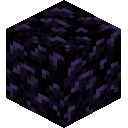
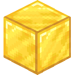
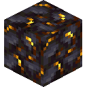

Vane
Vane is a plugin-suite that provides many immersive and lore-friendly additions to vanilla minecraft. It will run on any PaperMC based minecraft server. Check out our Server Installer for an easy way to set up vane together with auto-start, 3D online map, and more awesome features.
Features
Almost everything in vane is fully configurable—no matter whether it's a feature, recipe or loot-table. Dislike anything? Disable it. Below, you will find an overview of the most important features in vane.

Double doors will now automatically synchronize their sides, so both doors open and close simultaneously. No matter whether a player right-clicks them or redstone is involved.

Right-click on a fully grown plant to harvest and replant it instantly. This will yield 1–3 items with an elevated chance of receiving more than one item. No seeds will be dropped if the plant has a distinct seed-item.

Have you ever wondered, where you put those pesky ender pearls which you need like right now? Don't worry, the item finder has got you covered.
Use /finditem minecraft:enderpearl (or any other material) to search for the given item in all nearby
containers and entity inventories. (Also smite your friends if they stole it)
If you already have an item of the same type in your inventory, you can also shift-right-click it in your open inventory to perform a search for that item type.

When a button is pressed, all chest-like containers within a 1-block radius of the button are automatically sorted. This relates to a 3x3x3 cube where the button is the block in the middle.

You'll run faster on grass paths, so it's definitely worth building a few!

Nobody likes creepers that blow away half of your house, but disabling creeper explosions is really lame. That's why we did something about it, with style.

With the /heads menu you get access to over 32.000 decorative heads.
By clicking on the head, you will exchange a bone from your inventory for the selected head.
Shift-click for a whole stack, or use the hotbar keys 1–9 to get the respective number of items.
Once at least 50% of all players in the world are asleep, the night is skipped with a smooth transition to the next day.
Many players find it annoying that you have to find recipes before they are shown in your recipe book. By default, vane-trifles will unlock all recipes for a player when they first join a server.
"Too Expensive!" no more! By default, vane will limit the cost of anvil repairs and upgrades to 39 levels, which is the maximum cost before the minecraft client yells that unpleasant phrase at you.


Do you have a big field? Craft a sickle to easily harvest larger parts of a field. And while the sickle comes in all material variants, the golden sickle is the best. Wood and stone are the worst materials and therefore harvest only in a smaller radius.


Craft yourself a file to change the individual joints of walls, fences, glass panes, etc., as well as the shape of stairs.


Want to build with gradients? Craft a trowel and save yourself from getting RSI syndrome. The trowel will place a random block from your hotbar when you right-click another block.
By right-clicking the trowel in your inventory, you can change the "feed source" i.e., the inventory row from where it takes the blocks. You can choose any inventory rows or your hotbar.


Just a real compass that does what a compass usually does: Point north. The world in which you craft it determines the world in which it works.

Right-clicking a tiny slime with a bucket puts it in there. It remains quiet, but will start jumping inside the bucket if you find yourself in a slime chunk. The slime can also be deployed back into the world by right-clicking on a block. You may use it as a replacement for slimeballs. You monster.
Taken with written permission from @Vazkii from the awesome Quark Mod. All related assets are licensed under Attribution-NonCommercial-ShareAlike 3.0 Unported.


Why is the Bundle so useless? Here, take a proper early-game Pouch. Hold it in your hand and right-click to open it, or drop items directly into it by right-clicking the pouch with an item.


The natural successor to the pouch and shulkerbox regarding inventory expansion, but with the slight disadvantage that you will not be able to place it in the world anymore.


The base item for any portal scroll.


Use this scroll to teleport to your bed. Beware that the scroll only has 25 uses, so it's definitely worth enchanting it on an anvil with Unbreaking (or Unbreakable!)


This scroll works just like the previous scroll, but it teleports you to where you last used a scroll. Perfect for getting home quickly, unloading some stuff, and being right back in the mine.


This scroll brings you to the server's spawn. Admins can change that location by using the /setspawn command.
/setspawn: Change the spawn location of your server to where you are currently standing.


This is a powerful scroll that teleports you to your last death location if it is recent (last 20 minutes). Beware that it only has two uses!


This scroll is a special scroll that can be bound to a lodestone of your choice. Shift-rightclick on any lodestone to bind the scroll to that specific lodestone. You may now return to that location by using the scroll!


Save your experience in experience bottles. Craft an empty experience bottle and right-click. A small part of the experience will be lost when you fill it, but you can use the experience at a later time.


The Netherite Elytra combines the flight characteristics of the Elytra with the good defense of an armor.

You'll find these tomes in all sorts of chests along with normal loot as you explore the world. They form the basis for all of our enchantments.
| Item | Chance | Amount | Where |
|---|---|---|---|

|
5.00% | 0 - 2 |
ancient_city
|
|
|
20.00% | 0 - 2 |
abandoned_mineshaft
bastion_bridge
bastion_hoglin_stable
bastion_other
bastion_treasure
buried_treasure
desert_pyramid
end_city_treasure
minecraft:gameplay/fishing/treasure
igloo_chest
jungle_temple
nether_bridge
pillager_outpost
ruined_portal
shipwreck_treasure
stronghold_library
underwater_ruin_big
underwater_ruin_small
village/village_temple
woodland_mansion
|
|
|
20.00% | 0 - 2 |
terralith:spire/common
terralith:village/desert/generic_low
terralith:village/fortified/generic_low
terralith:village/fortified/smith/novice
terralith:village/desert/smith/novice
terralith:village/fortified/tavern_downstairs
terralith:village/fortified/tavern_upstairs
terralith:ruin/glacial/main_cs
terralith:spire/treasure
terralith:underground/chest
terralith:village/desert/archer
terralith:village/desert/attic
terralith:village/desert/butcher
terralith:village/desert/cartographer
terralith:village/desert/generic
terralith:village/desert/library
terralith:village/desert/mason
terralith:village/desert/smith
terralith:village/desert/treasure
terralith:village/fortified/archer
terralith:village/fortified/attic
terralith:village/fortified/butcher
terralith:village/fortified/cartographer
terralith:village/fortified/fisherman
terralith:village/fortified/food
terralith:village/fortified/generic
terralith:village/fortified/library
terralith:village/fortified/mason
terralith:village/fortified/smith
terralith:village/fortified/treasure
terralith:village/treasure/diamond
terralith:village/treasure/emerald
terralith:village/treasure/golem
|
|
|
5.00% | 0 - 2 |
terralith:village/desert/smith/expert
terralith:village/fortified/smith/expert
terralith:spire/rare
|


You can craft this better variant of an Ancient Tome yourself, as shown in the picture, or find it as well. This can then be used to get some enchantments.
| Item | Chance | Amount | Where |
|---|---|---|---|
|
|
3.33% | 1 |
ancient_city
|
|
|
3.33% | 1 | |
|
|
2.50% | 1 |
abandoned_mineshaft
bastion_treasure
buried_treasure
desert_pyramid
nether_bridge
ruined_portal
shipwreck_treasure
stronghold_library
underwater_ruin_big
village/village_temple
woodland_mansion
|
|
|
2.50% | 1 |
terralith:ruin/glacial/main_cs
terralith:spire/treasure
terralith:underground/chest
terralith:village/desert/archer
terralith:village/desert/attic
terralith:village/desert/butcher
terralith:village/desert/cartographer
terralith:village/desert/generic
terralith:village/desert/library
terralith:village/desert/mason
terralith:village/desert/smith
terralith:village/desert/treasure
terralith:village/fortified/archer
terralith:village/fortified/attic
terralith:village/fortified/butcher
terralith:village/fortified/cartographer
terralith:village/fortified/fisherman
terralith:village/fortified/food
terralith:village/fortified/generic
terralith:village/fortified/library
terralith:village/fortified/mason
terralith:village/fortified/smith
terralith:village/fortified/treasure
terralith:village/treasure/diamond
terralith:village/treasure/emerald
terralith:village/treasure/golem
|
|
|
3.33% | 1 |
terralith:village/desert/smith/expert
terralith:village/fortified/smith/expert
terralith:spire/rare
|
|
|
3.33% | 1 |


The divine variant of the Ancient Tome. Crafted from the previous level or rarely found. This tome is used for the strongest enchantments, so don't leave them lying around if you find any! When crafting it, you may use any two enchanted books; the exact enchantments don't matter.
| Item | Chance | Amount | Where |
|---|---|---|---|
|
|
0.67% | 1 |
ancient_city
|
|
|
0.50% | 1 |
bastion_treasure
buried_treasure
shipwreck_treasure
underwater_ruin_big
|
|
|
0.50% | 1 |
terralith:spire/treasure
terralith:underground/chest
|
|
|
0.67% | 1 |
terralith:spire/rare
|


The ultimate enchantment for the elytra. Sneak to speed up!
| Item | Chance | Amount | Where |
|---|---|---|---|
|
|
0.40% | 1 |
buried_treasure
pillager_outpost
ruined_portal
stronghold_library
underwater_ruin_big
village/village_temple
|


At last, a good use for the fishing rod!


Your head through the wall? AGAIN? Don't worry, your bighead can take it. (Prevents damage when you hit a wall with the Elytra)
| Item | Chance | Amount | Where |
|---|---|---|---|
|
|
2.00% | 1 |
bastion_bridge
bastion_hoglin_stable
bastion_other
bastion_treasure
|

Allows you to remove leaves very quickly with an axe. This will also drop the same things as if the leaf had decayed.


Strike your opponent with a lightning bolt during a storm when you hit it with a sword! Disabled by default.

Similar to Seeding, but to create tilled fields. Multiple right-clicks on existing fields creates a circle of tilled farmland.


Right-click on a seed with the hoe to sow a nearby field with the same plant. Multiple right-clicks on the same field will sow a circle.


Soulbound items remain in your inventory upon death. They also cannot be dropped accidentally. The book must be a curse of binding book, which you can get from a villager.
| Item | Chance | Amount | Where |
|---|---|---|---|
|
|
6.67% | 1 |
bastion_treasure
|


Get a boost when opening the elytra to take off directly from the ground! If you sneak while opening, you can also launch without the boost.
| Item | Chance | Amount | Where |
|---|---|---|---|
|
|
0.67% | 1 |
buried_treasure
pillager_outpost
ruined_portal
shipwreck_treasure
stronghold_library
underwater_ruin_big
underwater_ruin_small
village/village_temple
woodland_mansion
|


The ultimate enchantment.
| Item | Chance | Amount | Where |
|---|---|---|---|
|
|
3.33% | 1 |
bastion_treasure
|
|
|
0.83% | 1 |
abandoned_mineshaft
|

Sneak while flying with your elytra to get a small boost!
| Item | Chance | Amount | Where |
|---|---|---|---|
|
|
10.00% | 1 |
bastion_treasure
|
|
|
0.91% | 1 |
buried_treasure
pillager_outpost
ruined_portal
shipwreck_treasure
stronghold_library
underwater_ruin_big
underwater_ruin_small
village/village_temple
woodland_mansion
|
Overview

Portals are structures that let you travel to specific other portals—as many times as you want. You can build them in almost any shape, and style them to externally match your building style. It is the best way to travel great distances quickly. But beware, portals are expensive!
Right-clicking the portal console will open a menu where you can select any visible destination portal. Afterwards, activate the portal lever and step through.
Trivia
- Portals close automatically after 10 seconds.
- Any entity can traverse a portal, including items, horses and minecarts!
- Portals can be built horizontally.
- A portal cannot be activated if the destination portal is already connected somewhere else.
- Public portals can be activated by a redstone repeater.
- A portal can have multiple consoles.
- Any lever attached to the portal or next to the console can be used to control the portal.
- If a portal is in a vane-region, it gains two new visibility options to make it visible only to other portals in the same region or to players that have portal access in the region.
- Portals can be visible to only some players, but while a portal is opened, everyone may pass through.
Materials
Before you can build a portal, you need to gather the following materials:
| Item | Amount | Description |
|---|---|---|
 |
1 | Portal console |
| 1 | Origin block | |
 |
1 | A switch |
|    | Several | Portal frame blocks |
The portal frame may be built from any of the boundary blocks. It doesn't matter which ones you use, but remember that each block-type can later be individually styled as another block.
Portal Frame

First, you need to construct the frame of the portal. It can be built either vertically or horizontally, but typically a vertical variant will be more convenient to use.
A portal frame is formed by a closed loop of blocks of any shape. Like a nether portal, it doesn't count edge-blocks, but only blocks that touch the inside of the portal with at least one side. The enclosed air will become the portal area.
The netherite block, also called the origin block, marks the block on which a traveling player arrives. There have to be at least 1x3 blocks of portal area above the netherite block, so a player can pass through without suffocating. With horizontal portals, the nethrite block location doesn't matter as the player always arrives in the middle.
Console & Lever

Next, you need to place the enchantment table in a convenient place near your portal. It will become the portal console which is used to select the destination before you travel. Create the portal by shift-right-clicking on the enchantment table, and then right-click on the frame. If all necessary conditions are met, you will be prompted to enter a name for the portal.
Finally, place your lever on any portal frame block, or on a block near the console (a 3x3x3 cube with the console in the middle) so you can activate it.
Note that the portal is private by default, which means that only you can use it as the destination from other portals. To change that, right-click the console to open the menu and change the visibility in the settings.
If you want, you can add additional consoles in the same way as you added the first console.
Activation

Activate the portal by first selecting a destination in the console, and then activate the lever. If the destination portal is private, the destination selection will be reset afterwards. If you selected a public portal, it will stay selected after the portal deactivates.
Portals can also be activated by a redstone repeater facing directly into a portal block. The portal is activated on a rising signal edge. Deactivation occurs after 10 seconds as usual. This only works if the destination portal is not in a vane-region that restricts portal access from the public!
It can be very handy to activate a portal from a detector rail ;)
Portal Settings

You as the owner of the portal will see additional entries in the menu to personalize or delete the portal. The settings menu allows you to change several things about the portal:
Name: Change the name of your portal
Icon: Choose any item from your inventory as the portal icon.
This item will be used in the target selector, and will be displayed above consoles of portals where it is set as the destination.
You can also use one of the many decorative heads from /heads.


Style: In the style selector, you can either use one of the predefined styles or create your own. Every type of block used in the portal frame can be disguised as any other block—at no cost. By default, everything is made of obsidian. You can even apply a different block based on whether the portal is currently active or not. Please share the styles you've created on our discord!
Remember to press Apply at the end to make your changes visible.
You can hide your portal by changing the inactive portal area block.
Orientation lock: Activate this to ensure that entities always exit the portal on the front-side. Usually portals behave relative to one another: Enter front, exit front - enter back, exit back. This locking can be useful when there's a wall behind your portal, and exiting on the back makes no sense.
Visibility: Choose who can use this portal as a destination. There are several options, but the two group options are only available when the portal's origin block is located inside a vane-group:
- Private: Only you, the owner
- Public: Everyone
- Group: Any players who can theoretically use portals in the respective region
- Group-internal: Anyone, but only if the used source portal is in the same region
Target-lock: Prevents the selected destination portal from resetting after the portal closes when the destination is not public. Useful for hidden portals in your base that have a set destination or are part of a minecart railway network.
Overview
Vane's region module allows you to purchase a piece of land. This allows you assign rights to other players, like building rights or container rights, as well as to set some environmental conditions within the region (disable explosions, monster spawn, PVP, ...).
Permission Management
There are some important concepts related to regions, which allow you to manage multiple regions easily:
- A region is an actual purchased piece of land.
- A so-called region-group is where you configure the environmental permissions and player permissions.
- Multiple regions can be governed by the same permissions simply by assigning them to the same region-group.
Each region belongs to exactly one region-group which determines the rules in that region. If you create a new region, it will belong to your default region-group. This is a region-group that exists by default and where only you have permissions to do anything.
To avoid having to give each player permissions separately, roles exists to manage player permissions. Available permissions are intentionally kept simple to allow quick configuration, and should be everything your players need. For more sophisticated permission control, use WorldGuard or another plugin.
- 3 default roles are created in each region-group for your convenience: admin, friend, others.
- others cannot build, can only view containers (only look, no touch!), but can use things (buttons, ...)
- friends can build, can use things, can use chests
- admins can do everything including permission management.
- Exactly one role can be assigned to each player in that region-group. Unassigned players automatically belong to the others' role.
Portals & Regions
If a portal is inside a region, some additional things apply:
- Admins of the region can change the portal settings
- The visibility of the portal can be restricted to either players that have the portal permission or other portals that are in a region with the same region group.
Preparation

Opening the region menu with /rg and start selecting a region by clicking on Create Region on the left.
A region costs diamonds  , but when you remove the region again, you will get all your diamonds back.
, but when you remove the region again, you will get all your diamonds back.
Select Region

Choose the extent of your region by selecting two opposite corners of a cube. Use left- and right-clicking with an empty hand to set the two corners respectively.
Your region selection will be displayed live in the world.
If all requirements are met, you will see green particles together with your selection, otherwise red ones.
In that case you can reopen the region menu with /rg to get detailed information on what is missing.
Create Region

When you are satisfied with your selection, create the region by clicking on the respective button in the region menu.
Default Group

Newly created regions are initially assigned to your default region-group. In summary, this region-group allows you to do anything and restrict everyone else from building or using your chests. Refer to Regions for more information about the default permissions.
It's generally a good idea to keep your private regions in this default group. Add your friends to the "friends" role to allow them to build and use chests.
Creating a Region-Group

Only create a new region-group if you require entirely different settings for one or more regions. This is usually the case when you share a bigger project with other people, and want everyone to be an admin in related areas.
If you require a new region-group, you can create one by clicking the respective item on the right side in the region menu /rg.
Assign Group

Finally, you need to assign your region to the newly created group, which you can do from the region's settings menu.
Tip: If you open the region menu /rg while standing in a region, you will see direct links to both the region's settings and the currently assigned region-group.
Environmental Settings

Each region-group has a set of environmental settings that apply to the actual regions in this region-group themselves and not to any players. These are settings like: Disabling monster spawn, controlling whether PVP is allowed, whether fire spreads or similar things. You can see and change all settings in the menu related to the region-group.
Roles

Players are assigned to exactly one role that dictates what they are allowed to do. Any newly created region-group by default contains 3 roles: [Admins], [Others] and Friends.
[Others] is a catch-all role for all players that have no assigned role. Those players may only use things like doors and buttons, but are restricted from building or using containers.
Friends may build, use things and use containers, but cannot change settings.
[Admins] are allowed to do everything, including assigning roles to players and adjusting permissions.
Assigning Roles and Permissions

By clicking on a role in the region-menu, you can customize the permissions for all players that belong to that role. In the same menu, you can assign players to that the selected role.
We always thought that the default chat format of minecraft seemed a bit blunt and is hard to read. That's why vane alters the default format of chat messages as well as join and leave notices slightly, to contrast the sender's name against the actual content.
Do you hate it that players can infer the commands and plugins installed on your server? This is possible because they get a different error message for unknown commands as opposed to just lacking the required permission.
Vane replaces the error message with the exact unknown-command message from your
spigot.yml, which prevents leaking any information. Additionally, tab completion
will also only be changed to only show commands to which a player has access.
Several core commands are available to ops and players in the admin permission group.
/customitem: Allows you to create custom items, as they require special NBT tags and are therefore a hassle to get right with /give.
/enchant: Enchant the item in your hand with any enchantment by minecraft or vane.
Several commands were introduced for your convenience. If not noted otherwise, these
commands are only available to ops and players in the admin permission group.
/gm or /gamemode: Quickly toggle between creative and survival mode.
/slimechunk: Tells you whether you are standing in a slimechunk.
/time: Smoothly change the time in your current world. Recognizes some nouns like /time day.
/weather: Change the weather in your current world to sun, rain or thunder.
Vane protects your world against some annoying hazards by default. Disable any of these protections if they don't fit your play style.
- Entities cannot break doors
- Endermen don't steal blocks
- Lightning doesn't create fire
- Explosions caused by the wither and by creepers will be rebuilt. See Creeper Protection.
- The wither can only be spawned in the nether and the end.
Vane provides slightly more sophisticated spawn protection than what is available in vanilla. It defines an actual radius (not a square) around some block to be protected from player modification.
By default, players are still allowed to use things like doors, chests and buttons.
Players can be exempt from the protection by granting them the permission
'vane.admin.bypass_spawn_protection.'
By default, is given to ops and members of the admin group.
If you need even more control, use a Region.
Why can't I build anything?
This feature is disabled by default, as it often caused confusion.
Graylist
Vane provides a feature similar to a graylist.
This allows anyone to connect to your server but in a no touch, only look! kind of way.
To modify anything about the world, a player must either be oped,
or have the vane.admin.modify_world permission.
If you are using the included lightweight permissions plugin vane-permissions,
you can assign a new player to the user group by executing perm add player_name user.
Why can't I build anything?
This feature is disabled by default, as it often caused confusion.
Vouching
When using vane-permissions, you can also allow trusted members of your community to vouch for other players.
This allows them to lift a new user into the users group,
without requiring an admin.
Beneficial to permit your friends
to invite other people they know.
Vane stores who vouched for whom.
To give players this permission, assign them to the verified group with perm add player_name verified.
They may now vouch for other users by using /vouch other_player.
Vane is intended to be used with the replenish-loot option by PaperMC, which
replenishes loot in loot-chests after 1–2 realtime days. To make players aware of this,
vane prevents them from breaking loot chests accidentally. They can remove the block if desired,
but are warned before doing so.
All messages and items in vane are translated into English, German, French and Russian. A resource pack will automatically be served to players and ensures that the correct translation is used automatically by the player's client.
Everything in vane is fully configurable, and every feature can be disabled independently. There are so many options that it would be far too much to list them here.
Be sure to have a look at the corresponding configuration file for each module.
Every option is carefully explained in there. The file path is plugins/vane-<module>/config.yml.
To save on your server's resources, vane will shut down your server when 20 minutes have passed while the server is empty. This feature is especially great combined with the Autostart feature by vane-velocity, which automatically starts your server when someone tries to connect to it.
This feature allows you to have your server automatically start when a player tries to connect to it. This is part of vane-velocity, a plugin for the Velocity proxy server.
Check out our Server Installer for information on how to set this up correctly.
A multiplexer is an additional port for your server. When someone connects via this port, they will be logged into a secondary player character. This also works while being logged in on the main server. Beneficial for account sharing or to hand out spectator accounts. Add a new serverlist entry with the alternative port and enjoy having multiple accounts!
Two accounts is not enough? You can have as many multiplexers as you want.
Check out our Server Installer for information on how to set this up correctly.
Don't enjoy vane? Uninstalling it is fine and absolutely painless. Remove the plugin jars, and everything will be back to normal.
If players had any custom item from vane, they will seemingly revert to their base item, which is always of lower value compared to the custom item. If you reinstall vane, they even re-gain their functionality. May things will simply become a warped-fungus-on-a-stick.
If you are so kind, please let us know what was bothering you on our discord!